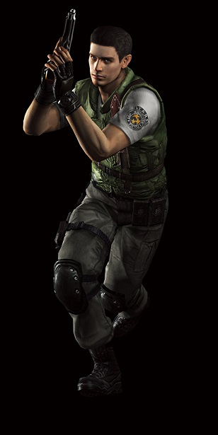
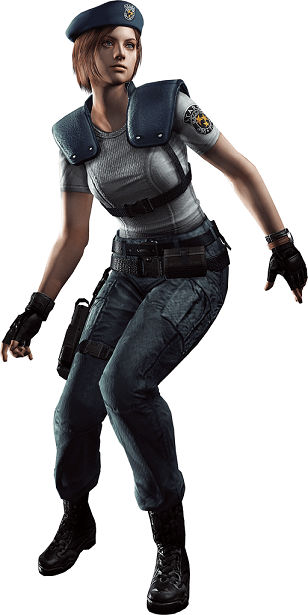
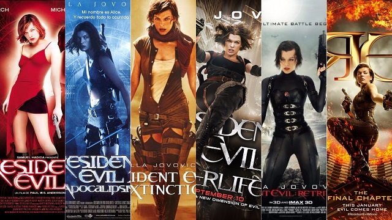

A Resident Evil egy túlélőhorror videójáték, amelyet a Capcom fejlesztett és adott ki eredetileg Sony PlayStationre 1996-ban. Később Windowsra és Sega Saturnra is kiadták. Ez volt az első olyan játék, amely a "túlélőhorror" kategóriába sorolta magát.
Két Főszereplője |
|
|---|---|
|  |  |
Chris Redfield |
Jill Valentine |
A Resident Evil elindításakor 2 karakter között kell választani. Ezek Chris Redfield és Jill Valentine. A szereplők fő történeti szála megegyezik, de a végigjátszás alatt bejárandó útvonal más.A játék rögzített külső kamera előtt játszódik. A hátterek előre renderelt állóképek, ezen kívül minden más 3D poligonos megjelenítést kapott. A játék célja, hogy a begyűjtött dokumentumok segítségével átverekedje magát azokon a feladványokon, amiket a kastély tartogat. A kiemelten fontos tárgyak (például kulcsok) segítségével új helyekre nyer bejutást a játékos és így adódik lehetősége a történet tovább görgetésére. Az irányított karakter különböző fegyvereket vehet a kezébe, amik lőszerutánpótlása limitált. Mérlegelni kell a fegyverhasználati szituációkat, bizonyos esetekben érdemesebb az ellenfelek elől elfutni. Sérülés esetén az elsősegély spray nyújt segítséget, de a helyenként felvehető növények és azok kombinációja is javítja a karakter állapotát. Menteni az írógépeknél lehet, de a játékosnak szüksége van ezen művelethez egy festékszalagra is, ami korlátozza a végtelen számú mentési lehetőséget. A leggyakrabban a húsevő zombik bukkannak fel, de mellettük fertőzött kutyákkal, hollókkal és óriás pókokkal is meg kell megküzdeni. Egyedi ellenfelek a vadászok, a kimérák és egy biológiai fegyver, a Tyrant.
Az eredeti PlayStation változathoz képest történt pár változtatás a játék angol nyelvterületen kiadott változataiban. Az észak-amerikai és európai változatokban az intro filmet erősen megvágták. Kikerült a csonkolt holttest, a zombikutya lelövése és Joseph halála sem látható. Kivágták még Chris Redfield cigaretta meggyújtását is. A Japán kiadásban a játék végén Fucsigami Fumitaka énekel, ez minden más régióban kimaradt.
A játék nagy sikere miatt filmadaptációk, könyvek, képregények, akciófigurák is készültek a sorozat és szereplői alapján. A filmek inkább kiemelendők, mivel összesen 12 film készült a játéksorozatból.
{kind=link}
{kind=link}